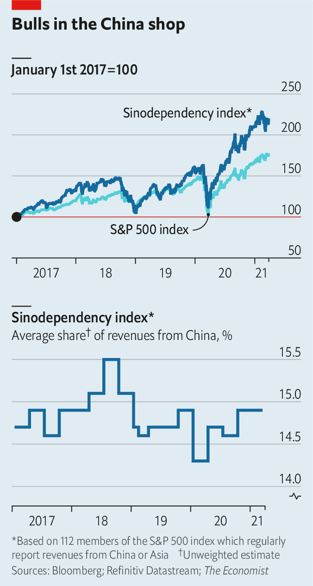
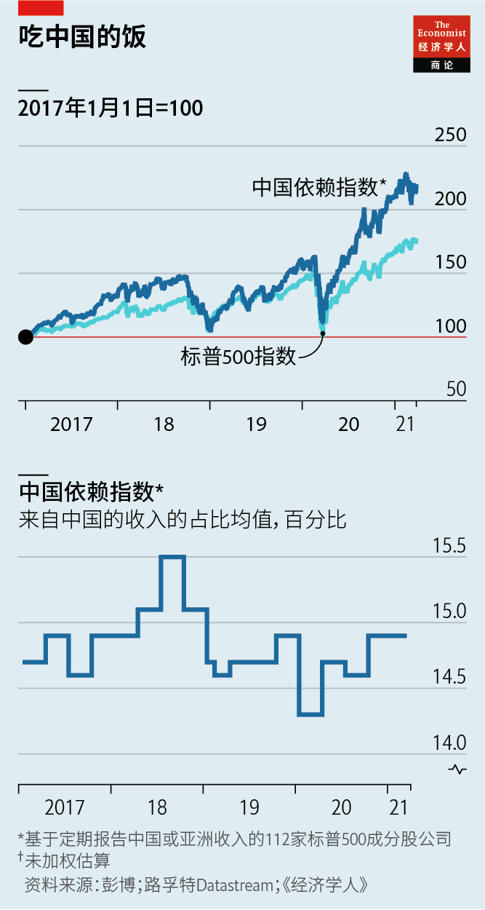

Text
2021-04-12T08:50:09+00:00
Commercial decoupling
商业脱钩
商業脫鉤
Swept up in a storm
卷入风暴
捲入風暴
A spat over cotton portends more trouble for Western firms in China
一场围绕棉花的口水仗预示着在华西方企业的日子会更难过
一場圍繞棉花的口水仗預示着在華西方企業的日子會更難過


BOYCOTTS OF FOREIGN brands are so common in China that managers have a ready-made playbook when caught in a storm of nationalist outrage. Start with an apology. Then stay mostly quiet, perhaps expressing respect for Chinese culture. Wait for the anger to subside. Over recent weeks the list of companies consulting the manual has grown. Chinese consumers, egged on by the ruling Communist Party, vowed to shun some of the world’s biggest clothing companies, from Adidas to Zara.
中国抵制外国品牌时有发生，所以企业主管已经有了一套现成的战术手册来应对民族主义怒火。先道歉。接下来基本保持沉默，或许表达一番对中国文化的尊重。等待怒火平息。近日，翻看这本手册的公司不断增加。在中国政府的鼓动下，中国消费者誓言要罢买从阿迪达斯到Zara的一批世界最大的服饰品牌。
中國抵制外國品牌時有發生，所以企業主管已經有了一套現成的戰術手冊來應對民族主義怒火。先道歉。接下來基本保持沉默，或許表達一番對中國文化的尊重。等待怒火平息。近日，翻看這本手冊的公司不斷增加。在中國政府的鼓動下，中國消費者誓言要罷買從阿迪達斯到Zara的一批世界最大的服飾品牌。
In the eyes of the boycotters, the firms erred by declaring concern over allegations that China’s cotton industry includes the forced labour of Uyghurs, a mostly Muslim ethnic minority in the north-western region of Xinjiang. Their bosses hope that the controversy will fizzle out. But they and other Western executives in China cannot shake an unsettling fear that this time is different. Their lucrative Chinese operations are at rising risk of tumbling into the political chasm that has opened between the West and China.
在抵制者看来，这些公司错在发布声明，表达对中国棉花产业存在强迫维吾尔族人（生活在中国西北部的新疆，大多为穆斯林的少数民族）劳动的指控的关切。这些公司的老板们希望这场争议能逐渐平息。但他们和其他西方企业在华高管都无法摆脱一种不安：这次的情况不同以往。他们利润丰厚的中国业务陷入中西方之间豁开的政治鸿沟的风险越来越高。
在抵制者看來，這些公司錯在發布聲明，表達對中國棉花產業存在強迫維吾爾族人（生活在中國西北部的新疆，大多為穆斯林的少數民族）勞動的指控的關切。這些公司的老闆們希望這場爭議能逐漸平息。但他們和其他西方企業在華高管都無法擺脫一種不安：這次的情況不同以往。他們利潤豐厚的中國業務陷入中西方之間豁開的政治鴻溝的風險越來越高。
H&M, a Swedish fast-fashion retailer, faces the most immediate trouble. As of March 30th, a week after it was attacked online, its garments were still unavailable on China’s most popular e-commerce apps. Its stores have disappeared from smartphone maps. Landlords in several shopping malls have terminated its leases. Its Chinese business, worth $1bn in revenues and representing 5% of its global sales in 2020, is in jeopardy.
瑞典快时尚零售商H&M尤其火烧眉毛。截至3月30日，也就是该品牌在网上被围攻一周后，在中国最流行的那些电商应用中仍然搜索不到其产品。智能手机的地图应用上也搜不到实体店地点。一些购物中心的业主终止了H&M的租约。该品牌2020年在中国的收入达10亿美元，占其全球销售额的5%，这一部分如今危在旦夕。
瑞典快時尚零售商H&M尤其火燒眉毛。截至3月30日，也就是該品牌在網上被圍攻一周後，在中國最流行的那些電商應用中仍然搜索不到其產品。智能手機的地圖應用上也搜不到實體店地點。一些購物中心的業主終止了H&M的租約。該品牌2020年在中國的收入達10億美元，占其全球銷售額的5%，這一部分如今危在旦夕。
For other companies the Xinjiang rage has not been as devastating. Even as celebrities in China cancelled endorsement deals with Nike, some 350,000 Chinese signed up for an online sale of a limited-edition pair of its swooshy shoes on March 26th. Little by little the social-media mob has dwindled amid signs that government censors were reining it in, perhaps to lower the heat. The share prices of foreign firms entangled in the boycotts have clawed back most of their initial losses.
这场新疆棉怒火给其他企业带来的损伤要小一些。在中国明星们纷纷解除与耐克的代言合同之时，一款于3月26日在网上开售的限量版耐克鞋引来了约35万中国人预订。有迹象显示政府审查部门开始抑制网上舆论——或许是为了给火势降温——社交媒体上的声浪逐渐减弱。卷入抵制潮的外企的股价纷纷回升，收回了最初的大部分失地。
這場新疆棉怒火給其他企業帶來的損傷要小一些。在中國明星們紛紛解除與耐克的代言合同之時，一款於3月26日在網上開售的限量版耐克鞋引來了約35萬中國人預訂。有跡象顯示政府審查部門開始抑制網上輿論——或許是為了給火勢降溫——社交媒體上的聲浪逐漸減弱。捲入抵制潮的外企的股價紛紛回升，收回了最初的大部分失地。
Foreign executives, however, remain on edge. The issue at the heart of their current problems—China’s human-rights violations in Xinjiang, and the West’s newfound willingness to punish them—is one for which the tried and tested playbook is ill-suited. It may also be more expansive, seeping into many other corners of their business dealings in the world’s second-biggest economy.
然而，外企高管们仍然坐立不安。他们当下难题的核心是中国在新疆被控侵犯人权以及西方国家最近图谋惩戒这件事，而那本屡试不爽的战术手册这回并不适用。而且这个问题可能涉及的范围更广，渗透到它们与这个世界第二大经济体打交道的其他许多方面。
然而，外企高管們仍然坐立不安。他們當下難題的核心是中國在新疆被控侵犯人權以及西方國家最近圖謀懲戒這件事，而那本屢試不爽的戰術手冊這回並不適用。而且這個問題可能涉及的範圍更廣，滲透到它們與這個世界第二大經濟體打交道的其他許多方面。
The boycotts were apparently triggered by the co-ordinated announcements on March 22nd by America, Britain, Canada and the European Union of sanctions against Chinese officials for abuses in Xinjiang. China responded with sanctions of its own. The Communist Youth League, a party affiliate, then dug up a months-old statement by H&M expressing concern about reports of Uyghur forced labour. Hua Chunying, a foreign-ministry spokeswoman, made the message clear. “The Chinese people will not allow some foreign companies to eat Chinese food and smash Chinese bowls,” she said.
本轮抵制的导火索看起来是美国、英国、加拿大和欧盟在3月22日联合宣布就新疆人权问题制裁中国官员。作为回应，中国实施了反制裁。共产党下属组织共青团随后挖出了H&M几个月前就维吾尔族强迫劳动的报道发布的一份关注声明。外交部发言人华春莹对此明确表态。“中国老百姓也不允许一些外国人一边吃着中国的饭，一边砸着中国的碗。”她说。
本輪抵制的導火索看起來是美國、英國、加拿大和歐盟在3月22日聯合宣布就新疆人權問題制裁中國官員。作為回應，中國實施了反制裁。共產黨下屬組織共青團隨後挖出了H&M幾個月前就維吾爾族強迫勞動的報道發布的一份關注聲明。外交部發言人華春瑩對此明確表態。“中國老百姓也不允許一些外國人一邊吃着中國的飯，一邊砸着中國的碗。”她說。
The commercial conflagration over cotton illustrates the difficulty of even limited economic decoupling between China and the West. China’s cotton industry is worth about $12bn a year, less than 0.1% of GDP. About 90% of China’s cotton comes from Xinjiang, and the government says 70% of that is harvested mechanically. In theory it should be possible for companies to remove hand-picked fibres from supply chains. In practice that would require audits of how the cotton is produced. China will not allow free travel around Xinjiang, let alone unmonitored conversations with Uyghur workers. Last year American clothing-industry groups described the situation as “of a scale, scope and complexity that is unprecedented during the modern era of global supply chains”.
这场围绕棉花的商业纷争显示，中西方之间即便是要实现有限的经济脱钩也很难。中国的棉花产业每年价值约120亿美元，不到GDP的0.1%。中国约90%的棉花来自新疆，政府称其中70%是机械采摘。理论上，企业应该可以从供应链中排除手工采摘的部分。实际操作起来，这需要审核棉花的生产方式。中国不允许在新疆自由旅行，更别说在无人监控的情况下接触维吾尔族工人。去年，美国服装业团体描述这一现状时称“其规模、范围和复杂性在现代的全球供应链时代前所未有”。
這場圍繞棉花的商業紛爭顯示，中西方之間即便是要實現有限的經濟脫鉤也很難。中國的棉花產業每年價值約120億美元，不到GDP的0.1%。中國約90%的棉花來自新疆，政府稱其中70%是機械採摘。理論上，企業應該可以從供應鏈中排除手工採摘的部分。實際操作起來，這需要審核棉花的生產方式。中國不允許在新疆自由旅行，更別說在無人監控的情況下接觸維吾爾族工人。去年，美國服裝業團體描述這一現狀時稱“其規模、範圍和複雜性在現代的全球供應鏈時代前所未有”。
In January Donald Trump cut through the complexity with a full prohibition on cotton imports from Xinjiang. His successor as president, Joe Biden, who is less China-baiting but more concerned about human rights, has not reversed it. The trouble is that yarn from Xinjiang ends up in factories around China, making it hard to stop the taint from spreading to all Chinese cotton products, which make up a large slice of global supply. China accounts for about 40% of the world’s textile exports. “There is no way we can declare the full supply chain is clean,” observes a consultant based in Shanghai.
今年1月，特朗普全面禁止进口新疆棉，直接避免了这种复杂情形。他的继任者拜登没有撤销这道禁令（拜登的注意力更多在人权，而非像特朗普那样故意激怒中国）。问题是，来自新疆的棉纱最终会进入中国各地的工厂，因此难以阻止新疆棉进入各种中国棉制品，而这些产品在全球供应中占了很大一部分。中国约占全球纺织品出口的40%。“我们无法宣称整个供应链不含新疆棉。”一位驻上海的顾问表示。
今年1月，特朗普全面禁止進口新疆棉，直接避免了這種複雜情形。他的繼任者拜登沒有撤銷這道禁令（拜登的注意力更多在人權，而非像特朗普那樣故意激怒中國）。問題是，來自新疆的棉紗最終會進入中國各地的工廠，因此難以阻止新疆棉進入各種中國棉製品，而這些產品在全球供應中佔了很大一部分。中國約佔全球紡織品出口的40%。“我們無法宣稱整個供應鏈不含新疆棉。”一位駐上海的顧問表示。
Mei Xinyu, a researcher with the Ministry of Commerce, has written that cotton is the “entry point” for America’s strategy of using the Xinjiang allegations to suppress China, which denies any forced labour is taking place. China’s only choice, he says, is to fight back forcefully. The Communist Party is confident of its abilities to do so, thanks to what it calls the “powerful gravitational field” of its market. American-listed firms which regularly report their revenues from China or Asia, and can thus be assumed to have larger exposure to the country, have outperformed those that do not in recent years (see chart).
商务部研究员梅新育撰文称，棉花是美国利用对新疆的指控撼动中国的战略“切入点”。（中国否认存在任何强迫劳动。）中国不能不对此做出有力的反应，他说。共产党有信心中国能这么做，因为中国的市场具有它所说的“强大引力场”。那些定期报告中国或亚洲市场收入的美国上市公司（可据此假定它们更加依赖中国）近年来的表现优于无中国或亚洲业务的公司（见图表）。
商務部研究員梅新育撰文稱，棉花是美國利用對新疆的指控撼動中國的戰略“切入點”。（中國否認存在任何強迫勞動。）中國不能不對此做出有力的反應，他說。共產黨有信心中國能這麼做，因為中國的市場具有它所說的“強大引力場”。那些定期報告中國或亞洲市場收入的美國上市公司（可據此假定它們更加依賴中國）近年來的表現優於無中國或亞洲業務的公司（見圖表）。
Yet even gravity has its limits. An apology, the first step in mending fences, is untenable this time. Many people inside foreign companies “recognise the moral gravity of what’s happening in Xinjiang”, says Scott Nova of the Worker Rights Consortium, a labour-monitoring organisation. Those that do not must still comply with the American ban on cotton imports if shipping to America. This earns them little sympathy in China. Foreign firms have found it virtually impossible to get audiences with Chinese officials to explain their legal obligations in America, says a government-relations expert.
不过，即便引力也有其上限。作为修补关系的第一步，道歉在这一次已经站不住脚了。劳工监督组织工人权利协会（Worker Rights Consortium）的斯科特·诺瓦（Scott Nova）说，外企内部有很多人“意识到新疆发生的事情在道德上很严重”。即便不这样想的人在向美国发货时也还是必须遵守美国政府的棉花禁令。而它们并不会因此在中国收获同情。一位政府关系专家表示，外国公司发现几乎不可能让中国官员听它们解释自己在美国的法律义务。
不過，即便引力也有其上限。作為修補關係的第一步，道歉在這一次已經站不住腳了。勞工監督組織工人權利協會（Worker Rights Consortium）的斯科特·諾瓦（Scott Nova）說，外企內部有很多人“意識到新疆發生的事情在道德上很嚴重”。即便不這樣想的人在向美國發貨時也還是必須遵守美國政府的棉花禁令。而它們並不會因此在中國收穫同情。一位政府關係專家表示，外國公司發現幾乎不可能讓中國官員聽它們解釋自己在美國的法律義務。
Those obligations may soon multiply. The Uyghur Forced Labour Prevention Act, currently wending its way through Congress with bipartisan support, assumes that all Xinjiang products are made with forced labour. Companies will have to prove otherwise if they want to export to America. “It’s like having to prove a negative,” sighs one representative of American industry. The consequences could be dramatic. Nearly half of the polysilicon in solar panels globally comes from Xinjiang. China’s largest wind-turbine maker, Goldwind, is based there. Xinjiang’s oil and gas power factories around China.
这类义务也许很快会成倍增加。得到美国两党支持的《防止强迫维吾尔劳动法》（Uyghur Forced Labour Prevention Act）现在正等待国会通过，该法案假定所有新疆产品都是用强迫劳动制造的。要出口产品到美国，企业就必须证明自家产品制造中未用到新疆产品。“这就像必须要自证清白一样。”一位美国工业界代表叹道。后果可能是戏剧性的。全球太阳能电池板中近一半的多晶硅来自新疆。中国最大的风力涡轮机制造商金风科技的总部就在新疆。新疆的石油和天然气驱动着中国各地的工厂。
這類義務也許很快會成倍增加。得到美國兩黨支持的《防止強迫維吾爾勞動法》（Uyghur Forced Labour Prevention Act）現在正等待國會通過，該法案假定所有新疆產品都是用強迫勞動製造的。要出口產品到美國，企業就必須證明自家產品製造中未用到新疆產品。“這就像必須要自證清白一樣。”一位美國工業界代表嘆道。後果可能是戲劇性的。全球太陽能電池板中近一半的多晶硅來自新疆。中國最大的風力渦輪機製造商金風科技的總部就在新疆。新疆的石油和天然氣驅動着中國各地的工廠。
Europe has so far refrained from banning products from Xinjiang. China’s decision to focus its ire on H&M rather than on an American firm may be a warning to EU officials to keep it that way. But the aggression poses a risk. In December the EU and China signed an investment deal which would give European industrial and financial firms greater access to the Chinese market. The European Parliament may now have second thoughts when asked to ratify it. “After seven years of negotiations, we hoped for seven years of wellness. Now it looks like it might be seven years of drought,” says Joerg Wuttke, president of the EU Chamber of Commerce in China.
欧洲目前尚未禁用新疆产品。中国决定把怒火集中发泄在H&M而非一家美国公司身上，这可能是向欧盟官员发出警示，让他们继续保持克制。但这种攻击带来了风险。去年12月，欧盟和中国签署了一项投资协定，让欧洲工业及金融企业更容易进入中国市场。现在，欧洲议会审批该协定时可能要重新考虑了。“经过七年磋商，我们本希望能有七年的好光景。现在看来可能会是七年干旱。”中国欧盟商会主席伍德克（Joerg Wuttke）说。
歐洲目前尚未禁用新疆產品。中國決定把怒火集中發泄在H&M而非一家美國公司身上，這可能是向歐盟官員發出警示，讓他們繼續保持克制。但這種攻擊帶來了風險。去年12月，歐盟和中國簽署了一項投資協定，讓歐洲工業及金融企業更容易進入中國市場。現在，歐洲議會審批該協定時可能要重新考慮了。“經過七年磋商，我們本希望能有七年的好光景。現在看來可能會是七年乾旱。”中國歐盟商會主席伍德克（Joerg Wuttke）說。
China still wants some foreign firms to feel welcome. On March 26th Li Keqiang, the prime minister, visited a plant part-owned by BASF, a German chemicals giant. Such comity will almost certainly become rarer as the authorities promote home-grown business, from chipmaking to electric vehicles. China’s newest five-year plan, unveiled in March, is focused above all else on the pursuit of self-sufficiency in the face of a “hostile external environment”, as party leaders describe it. Western bosses had hoped that the fissures between China and the West would start to close under Mr Biden’s administration. Instead they are getting deeper and wider. ■
中国还是想让一些外企感到自己是受欢迎的。3月26日，总理李克强参观了德国化工巨头巴斯夫的一家在华合资工厂。但随着政府推动从芯片制造到电动汽车等领域的本土发展，几乎可以肯定这种礼遇会越来越少见。中国在3月公布了最新的五年计划，重点是在共产党领导人所说的“恶劣的外部环境”之下追求自给自足。西方企业老板曾希望，拜登上台后中西方之间的裂痕会逐渐弥合。结果正相反，这些裂痕正变得更深、更宽。
中國還是想讓一些外企感到自己是受歡迎的。3月26日，總理李克強參觀了德國化工巨頭巴斯夫的一家在華合資工廠。但隨着政府推動從芯片製造到電動汽車等領域的本土發展，幾乎可以肯定這種禮遇會越來越少見。中國在3月公布了最新的五年計劃，重點是在共產黨領導人所說的“惡劣的外部環境”之下追求自給自足。西方企業老闆曾希望，拜登上台後中西方之間的裂痕會逐漸彌合。結果正相反，這些裂痕正變得更深、更寬。